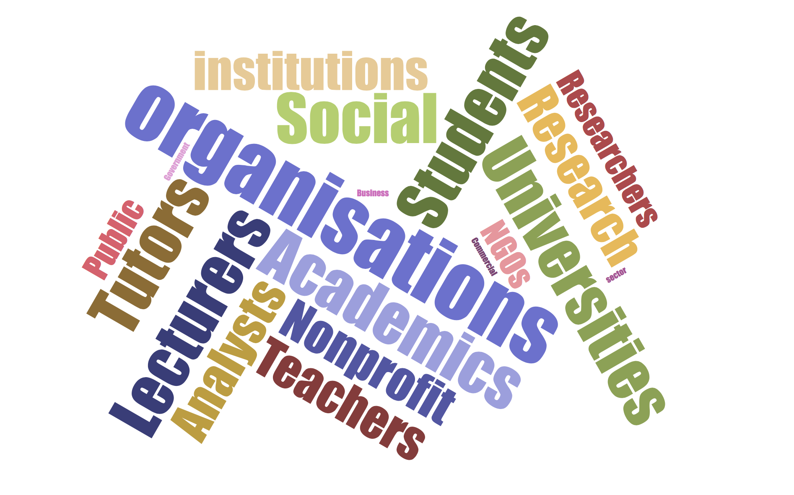

<!Doctype html>
<html lang="en">
  <head>
    <meta charset="utf-8">
    <meta http-equiv="X-UA-Compatible" content="IE=edge">
    <meta name="viewport" content="width=device-width, initial-scale=1">

    <title>Codercats</title>

    <meta name="description" content="Codercats">
    <meta name="author" content="Marc Bonne & Iana Gein">

    <link href="css/bootstrap.css" rel="stylesheet">

<!-- Custom styles for this template -->
    <link href="css/style.css" rel="stylesheet">

<!-- Icon for new logo -->
  <link rel="icon" href="images/logo.png" type="image/gif" sizes="16x16">

  </head>

  <body data-spy="scroll" data-target=".navbar" data-offset="50">

<!-- Navigation -->
    <nav class="navbar navbar-expand-md navbar-dark fixed-top bg-dark">

      <a class="navbar-brand" href="index.html">
          
        </a>
      <a class="navbar-brand" href="index.html">Codercats</a>

      <button class="navbar-toggler" type="button" data-toggle="collapse" data-target="#navbar" aria-controls="navbar" aria-expanded="false" aria-label="Toggle navigation">
          <span class="navbar-toggler-icon"></span>
        </button>

  <div class="collapse navbar-collapse" id="navbar">

    <ul class="navbar-nav mr-auto">
      <li class="nav-item mx-0 mx-lg-1">
        <a class="nav-link js-scroll-trigger" href="#features">Features</a>
      </li>
      <li class="nav-item mx-0 mx-lg-1">
        <a class="nav-link js-scroll-trigger" href="#users">Users</a>
      </li>
      <li class="nav-item mx-0 mx-lg-1">
        <a class="nav-link js-scroll-trigger" href="#tryit">Try it now</a>
      </li>
      <li class="nav-item mx-0 mx-lg-1">
        <a class="nav-link js-scroll-trigger" href="#contact">Get in touch</a>
      </li>

      <!-- 
      <li class="nav-item mx-0 mx-lg-1">
        <a class="nav-link js-scroll-trigger" href="login.html" target="_blank">Log in</a>
      </li>
      -->
    </ul>
  </div>
</nav>
<!-- Navigation -->

<main role="main">


<!-- Hero section -->
<section id="hero" class="anchor">
  <!-- Main jumbotron for a primary marketing message or call to action -->
  <div class="jumbotron">
    <div class="container">
      <div class="row">
        <div class="col-sm">
        </div>
          <div class="col-sm">
      <h1 class="display-3" style="font-size: 2.5rem;">Text mining and research</h1>
      <p>We designed Codercats to assist you with document analysis. <br> You'll find it most helpful if you have large data sets and want to try out advanced analytics.</p>
      <p><a class="btn btn-warning btn-lg" href="#tryit" role="button">Try it now &raquo;</a></p>
    </div>
      </div>
  </div>
</div>
</section>

<!-- Features section -->
<section id="features">

  <div class="container">
    <!-- Example row of columns -->
    <div class="row" style="padding-top:80px; margin-top: -60px;">
      <div class="col-md-4">
        <h2>Analytics</h2>
        <p>Qualitative analysis is not only about creating codes and finding them in the texts. We offer advanced analytical tools to perform topic modelling, lexical, sentiment and network analysis. </p>
      </div>
      <div class="col-md-4">
        <h2>Machine learning</h2>
        <p>Machine learning brings a quantitative touch to your qualitative research. It offers effective tools to find patterns and suggests appropriate codes for your key words. </p>
      </div>
      <div class="col-md-4">
        <h2>Visualisations</h2>
        <p>Visualisations are a powerful tool that allow you to see and understand data patterns. Codercats offers word clouds, graphs and diagrams to support your analysis and present results. </p>
      </div>
    </div>

    <div class="row">
      <div class="col-md-4">
        <h2>Collaboration</h2>
        <p>Codercats is a web-based application meaning you can use it anywhere with a browser available. It is the first analytical application that enables real-time collaboration and allows research groups to participate and monitor the progress. </p>
      </div>
      <div class="col-md-4">
        <h2>Data formats and API</h2>
        <p>Codercats supports a wide range of data formats. They include .doc, .pdf, .txt, .xls, .csv, and .html. You can also source your data using API tools. </p>
      </div>
      <div class="col-md-4">
        <h2>Usability</h2>
        <p>We utilised our UX/UI knowledge and experience with other analysis tools to design an intuitive interface. We hope that Codercats will help you with your investigations and support your career. </p>
      </div>
    </div>

  </div>
</section>

<!-- Users section -->
<section id="users">

  <div class="container-fluid text-center">
    <h1 style="color:#ef5d45; padding-top:80px; margin-top: -60px;">Who would benefit from using Codercats?</h1>
    <p>Our mission is facilitating academic research and supporting young researchers. <br>We encourage academics, students and public organisations to try out the benefits of Codercats.  </p>
    
  </div>

</section>

<!-- Try it section -->
<section id="tryit">
  <div class="container-fluid text-center" style="background-color:#e9ecef; padding-bottom: 20px;">
<h1 style="color:#ef5d45; padding-top:60px;">Take a look at the prototype</h1>
<p> Document reviews and coding is free for everyone. <br>
You only have to pay if you need advanced analytics tools, such as sentiment or lexical anaylsis.<br>
Feel free to leave your thoughts on the design using the comments feature or <a href = "mailto:mail@codercats.io">send us an email</a>.
</p>

<iframe style="border: none;" width="800" height="450" src="https://www.figma.com/embed?embed_host=share&url=https%3A%2F%2Fwww.figma.com%2Fproto%2FyR6XhViCnjnVX6ZlJuhD6E%2FDashboard%3Fnode-id%3D6%253A0%26scaling%3Dscale-down" allowfullscreen></iframe>

</div>
</section>


<!-- Contacts section -->
<section id="contact">
<div class="container">
  <h1 style="color:#ef5d45; padding-top:80px; margin-top: -60px;text-align:center; ">The team</h1>
  <div class="row" >


<div class="col-md-6">
      <div class="card">
        
        <div class="container">
          <h2 style="text-align: center">Marc Bonne</h2>
          <p class="title">PhD - Information Science</p>
          <p>UX research and design expert, with experience in front-end and back-end development. Worked for a range of tech companies and universities.</p>
          <p style="text-align:center"><a class="btn btn-info" href="https://www.linkedin.com/in/marc-bonne-36b28942/" role="button" target="_blank">LinkedIn</a></p>
        </div>
      </div>
</div>

<div class="col-md-6">
          <div class="card">
            
            <div class="container">
              <h2 style="text-align: center">Iana Gein</h2>
              <p class="title">MSc in Data Science</p>
              <p>Data specialist and web developer. Experienced in machine learning, data visualisation, business intelligence, social media analytics and interface design.</p>
              <p style="text-align:center"><a class="btn btn-info" href="https://www.linkedin.com/in/ianagein/" role="button" target="_blank">LinkedIn</a></p>
              </div>
            </div>
</div>
  </div>
</div>


<div class="container-fluid text-center">
<h1 style="color:#ef5d45; padding-top:40px; text-align:center;">Follow Codercats on social media</h1>
<p style="padding-bottom:30px;" ><a class="btn btn-info" href="https://www.linkedin.com/groups/8858493/" role="button" target="_blank">LinkedIn</a></p>
</div>

</section>


<!-- Contact form -->


</main>

<!-- footer -->

<footer style="background-color:#e9ecef; padding-top:20px; padding-bottom:10px; line-height: 80%" class="container-fluid text-center">
  <p>&copy; Codercats 2020 designed by <a href="http://www.sonicux.com" target="_blank">Sonic UX</a></p>
  <p> 71-75 Shelton Street, Covent Garden, London, WC2H 9JQ </p>
  <p><a href = "mailto:mail@codercats.io">mail@codercats.io</a></p>
</footer>
<!-- footer -->

<script src="js/tether.min.js"></script>
<script src="js/scripts.js"></script>
    <script src="js/jquery.min.js"></script>
    <script src="js/bootstrap.min.js"></script>
    <script src="https://code.jquery.com/jquery-2.1.3.min.js"></script>
    <script src="http://maxcdn.bootstrapcdn.com/bootstrap/4.4.1/js/bootstrap.min.js"></script>

    <!-- Global site tag (gtag.js) - Google Analytics -->
    <script async src="https://www.googletagmanager.com/gtag/js?id=UA-155675234-1"></script>
    <script>
      window.dataLayer = window.dataLayer || [];
      function gtag(){dataLayer.push(arguments);}
      gtag('js', new Date());

      gtag('config', 'UA-155675234-1');
    </script>
<!-- Global site tag (gtag.js) - Google Analytics -->


</body>
</html>
